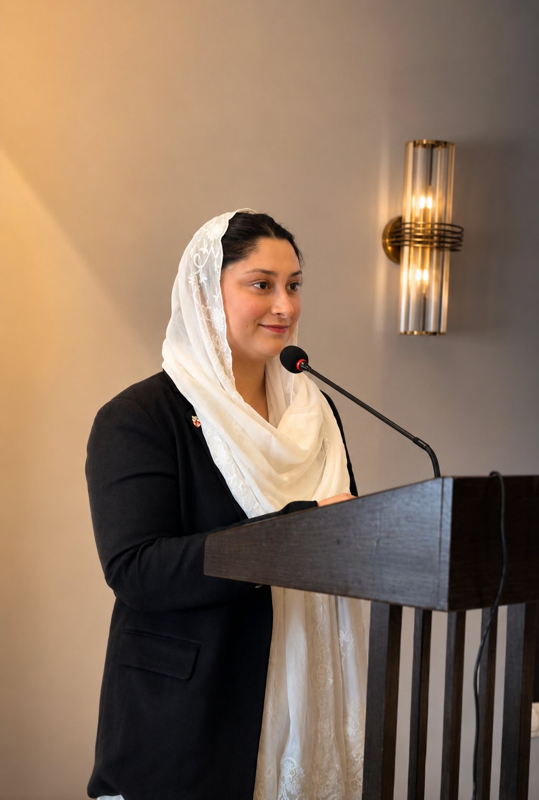

A distinguished legal professional with over 12 years of unwavering dedication to justice, integrity, and the people of Pakistan.

"The law is not merely a profession to me — it is my calling, my responsibility, and my promise to every client who walks through my door."
Advocate Javeria is a distinguished legal professional based in Peshawar, Pakistan, with over 12 years of dedicated practice spanning some of the country's most complex and sensitive legal matters. She obtained her LLB from the University of Peshawar and her LLM in Constitutional Law from Quaid-i-Azam University, Islamabad.
Enrolled as an advocate of the Peshawar High Court, she has appeared in district courts, sessions courts, the Peshawar High Court, and the Supreme Court of Pakistan. Her practice is distinguished by meticulous preparation, sharp courtroom instincts, and a genuine commitment to her clients' wellbeing.
As a female advocate in a field historically dominated by men, Advocate Javeria has broken barriers and become a trusted voice for women, families, and individuals seeking justice across Khyber Pakhtunkhwa and beyond. She is a member of the Peshawar Bar Association and the KPK Women Lawyers Forum.
A journey of growth, learning, and an unwavering commitment to legal excellence.
Built on a rigorous academic foundation and continuous professional development.
To provide every client — regardless of background — with fearless, intelligent, and ethical legal representation that upholds their dignity and protects their rights under Pakistani law.
A Pakistan where every citizen — especially women and the vulnerable — has equal access to quality legal counsel and the full protection of the justice system.
Integrity, excellence, compassion, and courage. These are not aspirations — they are the daily practice of Advocate Javeria in every case, every consultation, every courtroom.